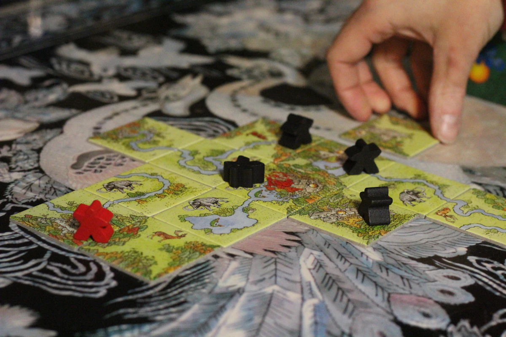

What should we play tonight?
Choose how many people are playing and how much time you have. From a catalogue of 30,224 board games, only games that fit both conditions make your shortlist.
Would you rather win as a team or compete with your friends? A few answers like that, together with a machine learning model, help you find a game without reading through dozens of rulebooks.

Games for your table
Change table settingsWhat does your group enjoy?
These questions change the order of your shortlist. Skip any question or go straight to your games.
Your shortlist
Shortlist settings
About the thesis and the ranking algorithm
For my bachelor’s thesis in systems analysis, I built this recommender using BoardGameGeek data. The finder filters games to fit your table, updates their scores after each answer, and picks the next question by how well it separates the leading 200 candidates.
The gradient boosting model scores each game using 94 features and supplies 30% of the final score. The starting rank and your answers supply the other 70%. I trained the model on synthetic scenarios. Turn it off in the shortlist settings to compare the results.
Source code, model and Python app